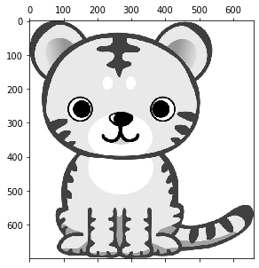
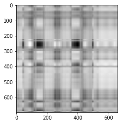

行列の特異値分解¶
2次元を1次元にする¶
[1]:
import numpy as np
A = np.array(
[
[16, 16],
[-2, 4],
[-8, -12],
[19, 5],
[-5, -3],
[-1, -15],
[9, 11],
[6, -4],
[-19, -12],
[-13, -1],
[14, -2],
[-18, -22],
]
)
行列を特異値分解する¶
[2]:
U, s, Vt = np.linalg.svd(A, full_matrices=False)
[3]:
U.shape
[3]:
(12, 2)
[4]:
s.shape
[4]:
(2,)
[5]:
Vt.shape
[5]:
(2, 2)
[6]:
s[0] * U[:, 0]
[6]:
array([-22.53004482, -1.01495498, 13.8191628 , -17.81493685,
5.76356881, 10.34761916, -13.9502204 , -2.06341583,
22.28468254, 10.64324024, -9.49722766, 27.90044081])
特異値分解の詳細¶
[7]:
np.linalg.matrix_rank(A)
[7]:
2
[8]:
np.diag(s)
[8]:
array([[53.24143255, 0. ],
[ 0. , 22.09863933]])
[9]:
U @ np.diag(s) @ Vt
[9]:
array([[ 16., 16.],
[ -2., 4.],
[ -8., -12.],
[ 19., 5.],
[ -5., -3.],
[ -1., -15.],
[ 9., 11.],
[ 6., -4.],
[-19., -12.],
[-13., -1.],
[ 14., -2.],
[-18., -22.]])
[10]:
U[:, 0] @ U[:, 1]
[10]:
-1.3877787807814457e-16
[11]:
for i in range(U.shape[1]):
print(
f"{i+1}列目のノルム",
np.linalg.norm(U[:, i]),
)
1列目のノルム 0.9999999999999999
2列目のノルム 0.9999999999999998
[12]:
Vt.T[:, 0] @ Vt.T[:, 1]
[12]:
0.0
[13]:
for i in range(Vt.shape[1]):
print(
f"{i+1}列目のノルム",
np.linalg.norm(Vt.T[:, i]),
)
1列目のノルム 0.9999999999999999
2列目のノルム 0.9999999999999999
[14]:
U[:, 0] * s[0]
[14]:
array([-22.53004482, -1.01495498, 13.8191628 , -17.81493685,
5.76356881, 10.34761916, -13.9502204 , -2.06341583,
22.28468254, 10.64324024, -9.49722766, 27.90044081])
[17]:
A @ Vt.T[:, 0]
[17]:
array([-22.53004482, -1.01495498, 13.8191628 , -17.81493685,
5.76356881, 10.34761916, -13.9502204 , -2.06341583,
22.28468254, 10.64324024, -9.49722766, 27.90044081])
[18]:
Vt.T[:, 0]
[18]:
array([-0.7695927, -0.6385351])
[41]:
Vt.T[:, 1]
[41]:
array([ 0.6385351, -0.7695927])
特異値分解と主成分分析¶
[19]:
from sklearn import datasets
iris = datasets.load_iris()
X = iris.data
X.shape
[19]:
(150, 4)
[21]:
from sklearn.decomposition import PCA
pca = PCA(n_components=1)
# 結果を1次元配列に変換
pca.fit_transform(X).reshape(-1)
[21]:
array([-2.68412563, -2.71414169, -2.88899057, -2.74534286, -2.72871654,
-2.28085963, -2.82053775, -2.62614497, -2.88638273, -2.6727558 ,
-2.50694709, -2.61275523, -2.78610927, -3.22380374, -2.64475039,
-2.38603903, -2.62352788, -2.64829671, -2.19982032, -2.5879864 ,
-2.31025622, -2.54370523, -3.21593942, -2.30273318, -2.35575405,
-2.50666891, -2.46882007, -2.56231991, -2.63953472, -2.63198939,
-2.58739848, -2.4099325 , -2.64886233, -2.59873675, -2.63692688,
-2.86624165, -2.62523805, -2.80068412, -2.98050204, -2.59000631,
-2.77010243, -2.84936871, -2.99740655, -2.40561449, -2.20948924,
-2.71445143, -2.53814826, -2.83946217, -2.54308575, -2.70335978,
1.28482569, 0.93248853, 1.46430232, 0.18331772, 1.08810326,
0.64166908, 1.09506066, -0.74912267, 1.04413183, -0.0087454 ,
-0.50784088, 0.51169856, 0.26497651, 0.98493451, -0.17392537,
0.92786078, 0.66028376, 0.23610499, 0.94473373, 0.04522698,
1.11628318, 0.35788842, 1.29818388, 0.92172892, 0.71485333,
0.90017437, 1.33202444, 1.55780216, 0.81329065, -0.30558378,
-0.06812649, -0.18962247, 0.13642871, 1.38002644, 0.58800644,
0.80685831, 1.22069088, 0.81509524, 0.24595768, 0.16641322,
0.46480029, 0.8908152 , 0.23054802, -0.70453176, 0.35698149,
0.33193448, 0.37621565, 0.64257601, -0.90646986, 0.29900084,
2.53119273, 1.41523588, 2.61667602, 1.97153105, 2.35000592,
3.39703874, 0.52123224, 2.93258707, 2.32122882, 2.91675097,
1.66177415, 1.80340195, 2.1655918 , 1.34616358, 1.58592822,
1.90445637, 1.94968906, 3.48705536, 3.79564542, 1.30079171,
2.42781791, 1.19900111, 3.49992004, 1.38876613, 2.2754305 ,
2.61409047, 1.25850816, 1.29113206, 2.12360872, 2.38800302,
2.84167278, 3.23067366, 2.15943764, 1.44416124, 1.78129481,
3.07649993, 2.14424331, 1.90509815, 1.16932634, 2.10761114,
2.31415471, 1.9222678 , 1.41523588, 2.56301338, 2.41874618,
1.94410979, 1.52716661, 1.76434572, 1.90094161, 1.39018886])
[22]:
mean_ = np.mean(X, axis=0)
centered_X = X - mean_
[23]:
iris_U, iris_s, iris_Vt = np.linalg.svd(centered_X, full_matrices=False)
[24]:
iris_U[:, 0] * iris_s[0]
[24]:
array([-2.68412563, -2.71414169, -2.88899057, -2.74534286, -2.72871654,
-2.28085963, -2.82053775, -2.62614497, -2.88638273, -2.6727558 ,
-2.50694709, -2.61275523, -2.78610927, -3.22380374, -2.64475039,
-2.38603903, -2.62352788, -2.64829671, -2.19982032, -2.5879864 ,
-2.31025622, -2.54370523, -3.21593942, -2.30273318, -2.35575405,
-2.50666891, -2.46882007, -2.56231991, -2.63953472, -2.63198939,
-2.58739848, -2.4099325 , -2.64886233, -2.59873675, -2.63692688,
-2.86624165, -2.62523805, -2.80068412, -2.98050204, -2.59000631,
-2.77010243, -2.84936871, -2.99740655, -2.40561449, -2.20948924,
-2.71445143, -2.53814826, -2.83946217, -2.54308575, -2.70335978,
1.28482569, 0.93248853, 1.46430232, 0.18331772, 1.08810326,
0.64166908, 1.09506066, -0.74912267, 1.04413183, -0.0087454 ,
-0.50784088, 0.51169856, 0.26497651, 0.98493451, -0.17392537,
0.92786078, 0.66028376, 0.23610499, 0.94473373, 0.04522698,
1.11628318, 0.35788842, 1.29818388, 0.92172892, 0.71485333,
0.90017437, 1.33202444, 1.55780216, 0.81329065, -0.30558378,
-0.06812649, -0.18962247, 0.13642871, 1.38002644, 0.58800644,
0.80685831, 1.22069088, 0.81509524, 0.24595768, 0.16641322,
0.46480029, 0.8908152 , 0.23054802, -0.70453176, 0.35698149,
0.33193448, 0.37621565, 0.64257601, -0.90646986, 0.29900084,
2.53119273, 1.41523588, 2.61667602, 1.97153105, 2.35000592,
3.39703874, 0.52123224, 2.93258707, 2.32122882, 2.91675097,
1.66177415, 1.80340195, 2.1655918 , 1.34616358, 1.58592822,
1.90445637, 1.94968906, 3.48705536, 3.79564542, 1.30079171,
2.42781791, 1.19900111, 3.49992004, 1.38876613, 2.2754305 ,
2.61409047, 1.25850816, 1.29113206, 2.12360872, 2.38800302,
2.84167278, 3.23067366, 2.15943764, 1.44416124, 1.78129481,
3.07649993, 2.14424331, 1.90509815, 1.16932634, 2.10761114,
2.31415471, 1.9222678 , 1.41523588, 2.56301338, 2.41874618,
1.94410979, 1.52716661, 1.76434572, 1.90094161, 1.39018886])
[25]:
all(np.equal(pca.fit_transform(X).reshape(-1), iris_U[:, 0] * iris_s[0]))
[25]:
True
[26]:
# 各成分の寄与率
pca.explained_variance_ratio_
[26]:
array([0.92461872])
[27]:
variance = iris_s**2
variance / sum(variance)
[27]:
array([0.92461872, 0.05306648, 0.01710261, 0.00521218])
行列の近似¶
[28]:
n, d = A.shape
M = np.zeros((n, d))
for i in range(d):
M += s[i] * U[:, i].reshape(n, -1) @ Vt[i].reshape(-1, d)
M
[28]:
array([[ 16., 16.],
[ -2., 4.],
[ -8., -12.],
[ 19., 5.],
[ -5., -3.],
[ -1., -15.],
[ 9., 11.],
[ 6., -4.],
[-19., -12.],
[-13., -1.],
[ 14., -2.],
[-18., -22.]])
[29]:
import matplotlib.pyplot as plt
from PIL import Image
# サンプル画像の読み込み
img = Image.open("data/tiger.png")
# カラーを白黒へ変換
img_l = img.convert("L")
# 数値に変換
num_img = np.array(img_l)
# 表示
plt.matshow(num_img, cmap="gray")
[29]:
<matplotlib.image.AxesImage at 0x7fc9e06b46a0>

[30]:
img_n, img_d = num_img.shape
img_n, img_d
[30]:
(700, 660)
[31]:
np.linalg.matrix_rank(num_img)
[31]:
660
[32]:
img_U, img_s, img_Vt = np.linalg.svd(num_img, full_matrices=False)
img_U.shape, img_s.shape, img_Vt.shape
[32]:
((700, 660), (660,), (660, 660))
[33]:
def sum_up_k_rank(k):
rec_img = np.zeros((img_n, img_d))
for i in range(k):
# i列目だけ
_U = img_U[:, i].reshape(img_n, -1)
# i行目だけ
_Vt = img_Vt[i].reshape(-1, img_d)
rec_img += img_s[i] * _U @ _Vt
return rec_img
[34]:
img_1 = sum_up_k_rank(1)
plt.imshow(img_1, cmap="gray")
[34]:
<matplotlib.image.AxesImage at 0x7fca00abef10>
[39]:
np.linalg.matrix_rank(img_1)
[39]:
1
[40]:
plt.imshow(sum_up_k_rank(2), cmap="gray")
[40]:
<matplotlib.image.AxesImage at 0x7fc9e0753430>

[41]:
plt.imshow(sum_up_k_rank(20), cmap="gray")
[41]:
<matplotlib.image.AxesImage at 0x7fca10eb5d00>
[42]:
plt.imshow(sum_up_k_rank(660), cmap="gray")
[42]:
<matplotlib.image.AxesImage at 0x7fc9e07974c0>
特異値分解と固有値・固有ベクトル¶
[43]:
B = A.T @ A
B
[43]:
array([[1878, 1153],
[1153, 1445]])
[44]:
eig_value, eig_vector = np.linalg.eig(B)
[45]:
np.sqrt(eig_value)
[45]:
array([53.24143255, 22.09863933])
[46]:
s
[46]:
array([53.24143255, 22.09863933])
[47]:
eig_vector.T
[47]:
array([[ 0.7695927, 0.6385351],
[-0.6385351, 0.7695927]])
[48]:
Vt
[48]:
array([[-0.7695927, -0.6385351],
[ 0.6385351, -0.7695927]])